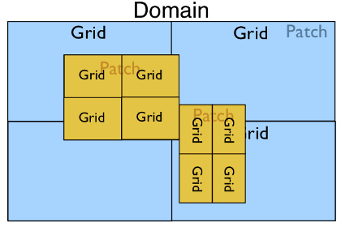

PyClaw Geometry¶
The PyClaw geometry package contains the classes used to define the
geometry of a Solution object. The base container
for all other geometry is the Domain object. It
contains a list of Patch objects that reside inside
of the Domain.

Patch
represents a piece of the domain that could be a different resolution than
the others, have a different coordinate mapping, or be used to construct
complex domain shapes.

It contains Dimension
objects that define the extent of the Patch and the
number of grid cells in each dimension. Patch also
contains a reference to a nearly identical Grid
object. The Grid object also contains a set of
Dimension objects describing its extent and number
of grid cells. The Grid is meant to represent the
geometry of the data local to the process in the case of a parallel run. In
a serial simulation the Patch and
Grid share the same dimensions.
In the case where only one Patch object exists in
a Domain but it is run with four processes in
parallel, the Domain hierarchy could look like:
In the most complex case with multiple patches and a parallel run we may have the following:
Serial Geometry Objects¶
pyclaw.geometry.Domain¶
-
class
clawpack.pyclaw.geometry.Domain(*arg)¶ A Domain is a list of Patches.
A Domain may be initialized in the following ways:
- Using 3 arguments, which are in order
- A list of the lower boundaries in each dimension
- A list of the upper boundaries in each dimension
- A list of the number of cells to be used in each dimension
- Using a single argument, which is
- A list of dimensions; or
- A list of patches.
Examples: >>> from clawpack import pyclaw >>> domain = pyclaw.Domain( (0.,0.), (1.,1.), (100,100)) >>> print(domain.num_dim) 2 >>> print(domain.grid.num_cells) [100, 100]
-
grid¶ (list) -
Patch.gridof base patch
-
num_dim¶ (int) -
Patch.num_dimof base patch
-
patch¶ (
Patch) - First patch is returned
pyclaw.geometry.Patch¶
-
class
clawpack.pyclaw.geometry.Patch(dimensions)¶ Bases:
objectGlobal Patch information: Each patch has a value for levelandpatch_index.-
add_dimension(dimension)¶ Add the specified dimension to this patch
Input: - dimension - (
Dimension) Dimension to be added
- dimension - (
-
get_dim_attribute(attr)¶ Returns a tuple of all dimensions’ attribute attr
-
delta¶ (list) - List of computational cell widths
-
dimensions¶ (list) - List of
Dimensionobjects defining the grid’s extent and resolution
-
level= None¶ (int) - AMR level this patch belongs to,
default = 1
-
lower_global¶ (list) - Lower coordinate extents of each dimension
-
name¶ (list) - List of names of each dimension
-
num_cells_global¶ (list) - List of the number of cells in each dimension
-
num_dim¶ (int) - Number of dimensions
-
patch_index= None¶ (int) - Patch number of current patch,
default = 0
-
upper_global¶ (list) - Upper coordinate extends of each dimension
-
pyclaw.geometry.Grid¶
-
class
clawpack.pyclaw.geometry.Grid(dimensions)¶ Representation of a single grid.
Dimension information: Each dimension has an associated name with it that can be accessed via that name such as
grid.x.num_cellswhich would access the x dimension’s number of cells.Properties: If the requested property has multiple values, a list will be returned with the corresponding property belonging to the dimensions in order.
Initialization: - Input:
- dimensions - (list of
Dimension) Dimensions that are to be associated with this grid
- dimensions - (list of
- Output:
- (
grid) Initialized grid object
- (
A PyClaw grid is usually constructed from a tuple of PyClaw Dimension objects:
>>> from clawpack.pyclaw.geometry import Dimension, Grid >>> x = Dimension(0.,1.,10,name='x') >>> y = Dimension(-1.,1.,25,name='y') >>> grid = Grid((x,y)) >>> print(grid) 2-dimensional domain (x,y) No mapping Extent: [0.0, 1.0] x [-1.0, 1.0] Cells: 10 x 25
We can query various properties of the grid:
>>> grid.num_dim 2 >>> grid.num_cells [10, 25] >>> grid.lower [0.0, -1.0] >>> grid.delta # Returns [dx, dy] [0.1, 0.08]
A grid can be extended to higher dimensions using the add_dimension() method:
>>> z=Dimension(-2.0,2.0,21,name='z') >>> grid.add_dimension(z) >>> grid.num_dim 3 >>> grid.num_cells [10, 25, 21]
We can get the x, y, and z-coordinate arrays of cell nodes and centers from the grid. Properties beginning with ‘c’ refer to the computational (unmapped) domain, while properties beginning with ‘p’ refer to the physical (mapped) domain. For grids with no mapping, the two are identical. Also note the difference between ‘center’ and ‘centers’.
>>> import numpy as np >>> np.set_printoptions(precision=2) # avoid doctest issues with roundoff >>> grid.c_center([1,2,3]) array([ 0.15, -0.8 , -1.33]) >>> grid.p_nodes[0][0,0,0] 0.0 >>> grid.p_nodes[1][0,0,0] -1.0 >>> grid.p_nodes[2][0,0,0] -2.0
It’s also possible to get coordinates for ghost cell arrays:
>>> x = Dimension(0.,1.,5,name='x') >>> grid1d = Grid([x]) >>> grid1d.c_centers [array([0.1, 0.3, 0.5, 0.7, 0.9])] >>> grid1d.c_centers_with_ghost(2) [array([-0.3, -0.1, 0.1, 0.3, 0.5, 0.7, 0.9, 1.1, 1.3])]
A grid mapping can be used to solve in a domain that is not rectangular, or to adjust the local spacing of grid cells. For instance, we can use smaller cells on the left and larger cells on the right by doing:
>>> double = lambda xarr : np.array([x**2 for x in xarr]) >>> grid1d.mapc2p = double >>> grid1d.p_centers array([0.01, 0.09, 0.25, 0.49, 0.81])
Note that the ‘nodes’ (or nodes) of the mapped grid are the mapped values of the computational nodes. In general, they are not the midpoints between mapped centers:
>>> grid1d.p_nodes array([0. , 0.04, 0.16, 0.36, 0.64, 1. ])
-
add_dimension(dimension)¶ Add the specified dimension to this patch
Input: - dimension - (
Dimension) Dimension to be added
- dimension - (
-
add_gauges(gauge_coords)¶ Determine the cell indices of each gauge and make a list of all gauges with their cell indices.
-
c_center(ind)¶ Compute center of computational cell with index ind.
-
c_centers_with_ghost(num_ghost)¶ Calculate the coordinates of the cell centers, including ghost cells, in the computational domain.
Input: - num_ghost - (int) Number of ghost cell layers
-
c_nodes_with_ghost(num_ghost)¶ Calculate the coordinates of the cell nodes (corners), including ghost cells, in the computational domain.
Input: - num_ghost - (int) Number of ghost cell layers
-
get_dim_attribute(attr)¶ Returns a tuple of all dimensions’ attribute attr
-
p_center(ind)¶ Compute center of physical cell with index ind.
-
plot(num_ghost=0, mapped=True, mark_nodes=False, mark_centers=False)¶ Make a plot of the grid.
By default the plot uses the mapping grid.mapc2p and does not show any ghost cells. This can be modified via the arguments mapped and num_ghost.
Returns a handle to the plot axis object.
-
setup_gauge_files(outdir)¶ Creates and opens file objects for gauges.
-
c_centers¶ (list of ndarray(...)) - List containing the arrays locating the computational locations of cell centers, see
_compute_c_centers()for more info.
-
c_nodes¶ (list of ndarray(...)) - List containing the arrays locating the computational locations of cell nodes, see
_compute_c_nodes()for more info.
-
dimensions¶ (list) - List of
Dimensionobjects defining the grid’s extent and resolution
-
gauge_dir_name= None¶ (string) - Name of the output directory for gauges. If the Controller class is used to run the application, this directory by default will be created under the Controller outdir directory.
-
gauge_file_names= None¶ (list) - List of file names to write gauge values to
-
gauge_files= None¶ (list) - List of file objects to write gauge values to
-
gauges= None¶ (list) - List of gauges’ indices to be filled by add_gauges method.
-
num_dim¶ (int) - Number of dimensions
-
p_centers¶ (list of ndarray(...)) - List containing the arrays locating the physical locations of cell centers, see
_compute_p_centers()for more info.
-
p_nodes¶ (list of ndarray(...)) - List containing the arrays locating the physical locations of cell nodes, see
_compute_p_nodes()for more info.
pyclaw.geometry.Dimension¶
-
class
clawpack.pyclaw.geometry.Dimension(lower, upper, num_cells, name='x', on_lower_boundary=None, on_upper_boundary=None, units=None)¶ Basic class representing a dimension of a Patch object
Initialization: - Required arguments, in order:
- lower - (float) Lower extent of dimension
- upper - (float) Upper extent of dimension
- num_cells - (int) Number of cells
- Optional (keyword) arguments:
- name - (string) string Name of dimension
- units - (string) Type of units, used for informational purposes only
- Output:
- (
Dimension) - Initialized Dimension object
- (
Example:
>>> from clawpack.pyclaw.geometry import Dimension >>> x = Dimension(0.,1.,100,name='x') >>> print(x) Dimension x: (num_cells,delta,[lower,upper]) = (100,0.01,[0.0,1.0]) >>> x.name 'x' >>> x.num_cells 100 >>> x.delta 0.01 >>> x.nodes[0] 0.0 >>> x.nodes[1] 0.01 >>> x.nodes[-1] 1.0 >>> x.centers[-1] 0.995 >>> len(x.centers) 100 >>> len(x.nodes) 101
-
centers_with_ghost(num_ghost)¶ (ndarrary(:)) - Location of all cell center coordinates for this dimension, including centers of ghost cells.
-
nodes_with_ghost(num_ghost)¶ (ndarrary(:)) - Location of all edge coordinates for this dimension, including nodes of ghost cells.
-
centers¶ (ndarrary(:)) - Location of all cell center coordinates for this dimension
-
delta¶ (float) - Size of an individual, computational cell
-
nodes¶ (ndarrary(:)) - Location of all cell edge coordinates for this dimension
Parallel Geometry Objects¶
petclaw.geometry.Domain¶
-
class
clawpack.petclaw.geometry.Domain(geom)¶ Bases:
clawpack.pyclaw.geometry.DomainParallel Domain Class
2D Classic (Clawpack) solver.
Solve using the wave propagation algorithms of Randy LeVeque’s Clawpack code (www.clawpack.org).
In addition to the attributes of ClawSolver1D, ClawSolver2D also has the following options:
-
dimensional_split¶ If True, use dimensional splitting (Godunov splitting). Dimensional splitting with Strang splitting is not supported at present but could easily be enabled if necessary. If False, use unsplit Clawpack algorithms, possibly including transverse Riemann solves.
-
transverse_waves¶ If dimensional_split is True, this option has no effect. If dimensional_split is False, then transverse_waves should be one of the following values:
ClawSolver2D.no_trans: Transverse Riemann solver not used. The stable CFL for this algorithm is 0.5. Not recommended.
ClawSolver2D.trans_inc: Transverse increment waves are computed and propagated.
ClawSolver2D.trans_cor: Transverse increment waves and transverse correction waves are computed and propagated.
Note that only the fortran routines are supported for now in 2D.
Generic classic Clawpack solver
All Clawpack solvers inherit from this base class.
-
mthlim¶ Limiter(s) to be used. Specified either as one value or a list. If one value, the specified limiter is used for all wave families. If a list, the specified values indicate which limiter to apply to each wave family. Take a look at pyclaw.limiters.tvd for an enumeration.
Default = limiters.tvd.minmod
-
order¶ Order of the solver, either 1 for first order (i.e., Godunov’s method) or 2 for second order (Lax-Wendroff-LeVeque).
Default = 2
-
source_split¶ Which source splitting method to use: 1 for first order Godunov splitting and 2 for second order Strang splitting.
Default = 1
-
fwave¶ Whether to split the flux jump (rather than the jump in Q) into waves; requires that the Riemann solver performs the splitting.
Default = False
-
step_source¶ Handle for function that evaluates the source term. The required signature for this function is:
def step_source(solver,state,dt)
-
kernel_language¶ Specifies whether to use wrapped Fortran routines (‘Fortran’) or pure Python (‘Python’).
Default = 'Fortran'.
-
verbosity¶ The level of detail of logged messages from the Fortran solver.
Default = 0.
-
petclaw.geometry.Patch¶
-
class
clawpack.petclaw.geometry.Patch(dimensions)¶ Bases:
clawpack.pyclaw.geometry.PatchParallel Patch class.
Global Patch information: Each patch has a value for levelandpatch_index.

Version 5.4.1
Table Of Contents
Related Topics
- Documentation overview
- Pyclaw
- Previous: PyClaw State
- Next: Pyclaw Utility Module
- Pyclaw